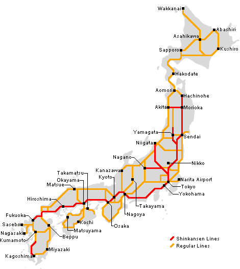

The Japan Rail Pass, known as the JR Pass, is the best and most efficient way for travelers to navigate Japan.
It is only available to foreign tourists, and can be bought for a length of time varying from one to three
weeks. This pass is available at such a low cost and allows tourists to use a variety of transportation systems.
The pass is offered in two different types: ordinary cars and green cars. The green cars are first class seats
and offer a much more spacious and comfortable ride. The JR pass is vaild on JR trains, Tokyo Monorail to/from
Haneda Airport, JR Ferry to Miyajima, local JR buses, Nozomi trains along the Tokaido/Sanyo Shinkansen, Mizuho
trains along the Sanyo/Kyushu Shinkansen, and JR trains using non-JR tracks.
| Japan Rail Pass |
| Type |
Ordinary |
Green Car |
| 7 consecutive days |
29,110 yen |
38,880 yen |
| 14 consecutive days |
46,390 yen |
62,950 yen |
| 21 consecutive days |
59,350 yen |
81,870 yen |
